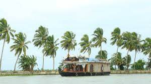
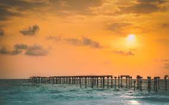
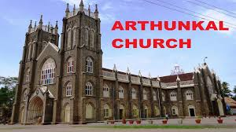
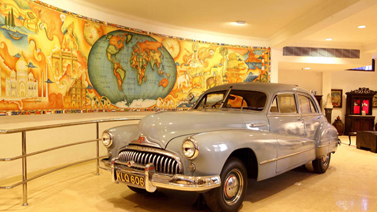

Referred to as the Venice of the East, Alappuzha has always enjoyed an important place in the maritime history of Kerala. Today, it is famous for its boat races, backwater holidays, beaches, marine products and coir industry. Alappuzha Beach is a popular picnic spot. The pier, which extends out to the sea here, is over 137 years old. Entertainment facilities at the Vijaya Beach Park add to the attraction of the beach. There is also an old lighthouse nearby which greatly intrigues all visitors.
| Alappuzha Beach | |
|---|---|
|  | Often called as the ‘Venice of the East’, Alappuzha Beach is one of the most exotic beach destinations in the country. The charms of Alappuzha have allured visitors since the time immemorial as the place has almost everything to delight the heart of a traveler. Besides the excellent beaches, Alappuzha is famous for its exciting boat races, backwater holidays, the flourishing coir industry and excellent marine products. However, what steals the show at this incredible location is the memorable houseboat cruises. The modern versions of the Kettuvallam of the olden times, these houseboats now come lined with state of the art luxury and elegant services such as furnished bedrooms, embellished living rooms, modern and clean toilets, a kitchen and also a balcony to enjoy the views and to give you a unique experience of the remarkable backwaters of the Kerala. Alappuzha Beach is nevertheless a popular picnic spot for the locals as well. There is an old pier at the beach, which extends right into the sea and is said to be about 137 years old. Besides an old lighthouse that stands nearby, is also a considerable attraction. |
| St. Andrew's Basilica Arthunkal | |
|---|---|
|  | Arthunkal is a major Christian pilgrim centre in Alappuzha district of Kerala. The St. Sebastian's church feast at St Andrew's Basilica Church is celebrated from 10 to 27 Jan. The St Sebastian's statue will be kept in front of the church altar on 18th Jan at 5 am. The procession of the Saint in a palanquin, on 20 January, by hundreds of devotees from church to beach chapel and back attracts a huge crowd of devotees. More than two lakh pilgrims visit the church during the festival. The octave is on 27 January with a procession of the Saint's statue to the beach. Sabarimala pilgrims too visit the church during their pilgrimage. The belief is that Lord Ayyappa and St. Sebastian are brothers. |
| Revi Karunakaran Museum | |
|---|---|
|  | Mr. Revi Karunakaran will always be remembered for his passion and the massive role he played in improving the coir industry in Kerala. The museum built to showcase his art collection stands testament to a man with a fine eye and love for a multitude of art forms. The museum is among the primary attractions in Alappuzha. The ivory and crystal collections are among the largest of its kind. A collection of Tanjore paintings shine brightly on its catalogue along with a 200 sq. ft. mural made completely from vegetable dyes. Its special 'Kerala Room' has over 3800 unique pieces that chart the growth and evolution of our culture. It is an establishment that embodies a love for art and all that is relevant to our culture. |